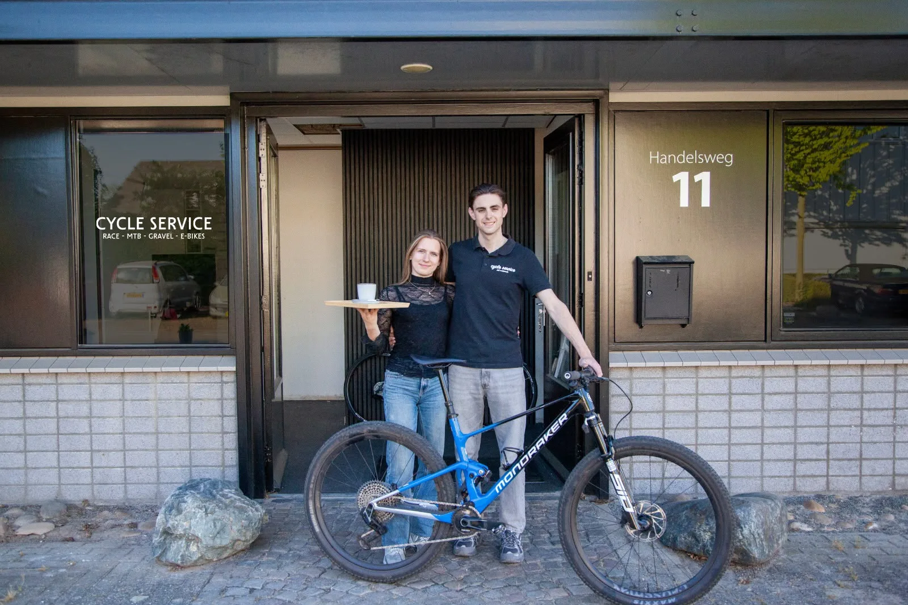
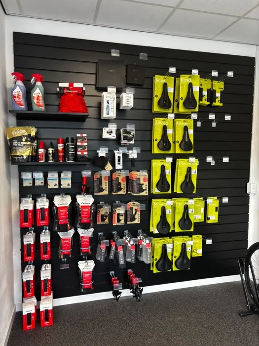
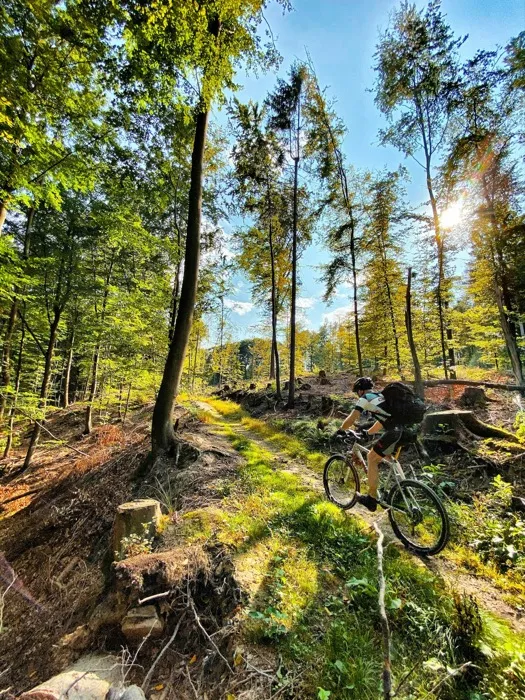
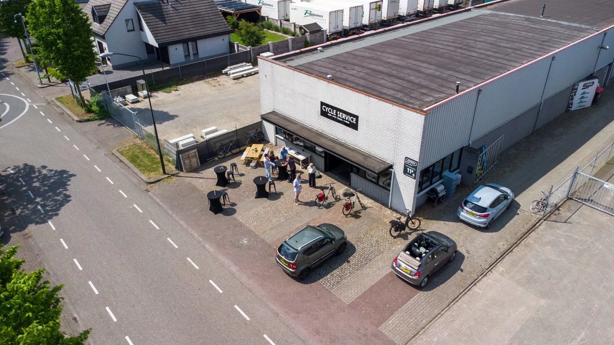
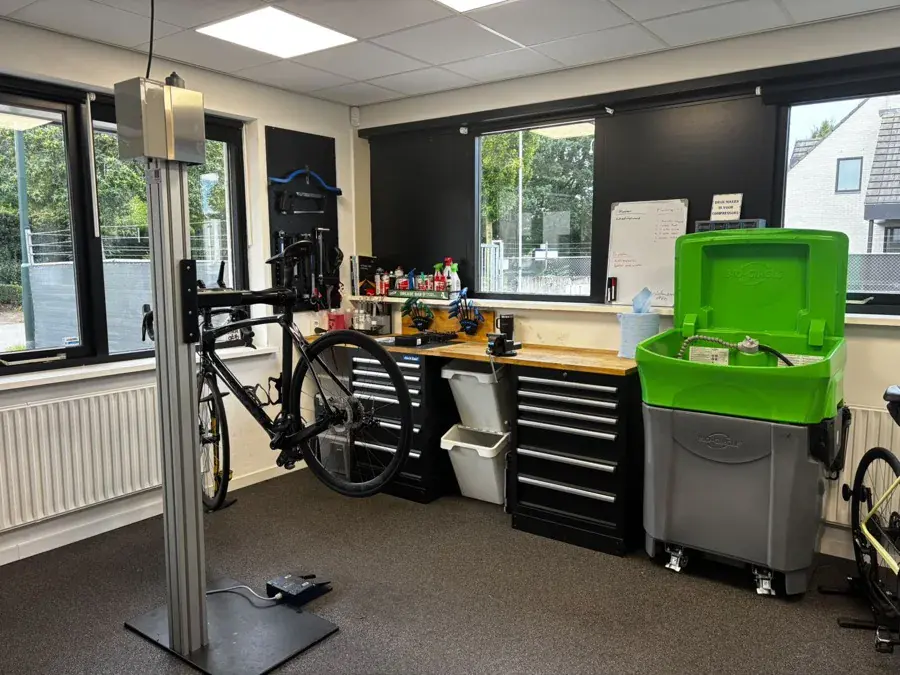

Uitleg bij elke reparatie
Je hoort wat er mis was, wat Jay heeft gedaan en wat je fiets de komende tijd nodig heeft. Geen vaktaal, gewoon duidelijk.

Jay van der Kallen uit Nijnsel begon in 2020 in de avonduren. Nu staan er ruim 300 fietsers in zijn klantenbestand, en hoor je bij elke reparatie wat hij heeft gedaan.

In 2020 repareerde Jay in de avonduren fietsen van vrienden en bekenden, vanuit huis. Overdag werkte hij bij Cycletrend in Nuenen en later bij Canyon in Eindhoven. Omdat praktijk alleen niet genoeg was, rondde hij de opleiding fietstechniek en eerste fietstechniek af aan het Koning Willem I College in Den Bosch.
Het thuis sleutelen groeide uit tot een volwaardige winkel en werkplaats aan de Handelsweg, met een webshop met exclusieve merken erbij. Naast de zaak volgt Jay een bachelor ondernemen en retailmanagement.
Fietsen maken is voor Jay vakwerk én een manier om iets bij te dragen aan de fietsers in de omgeving. Dat merk je aan drie dingen.
Je hoort wat er mis was, wat Jay heeft gedaan en wat je fiets de komende tijd nodig heeft. Geen vaktaal, gewoon duidelijk.
Slijtagedelen vervangt Jay alleen als ze op zijn, en altijd na overleg. Een onderdeel dat nog goed is, blijft zitten.

Race, MTB, gravel en e-bike. Geen kinderfietsen of bakfietsen: zo blijft de kennis diep waar het telt, van tubeless tot Di2 en Bosch.

Aan de Handelsweg 11 zit alles onder één dak: de werkplaats met montagestandaards en reinigingsstation, de winkel met fietsen en onderdelen, en een bar waar je een koffie drinkt terwijl Jay je fiets nakijkt. Parkeren kan gratis voor de deur.


Handelsweg 11, Sint-Oedenrode. Je bent welkom tijdens openingstijden, ook zonder afspraak.